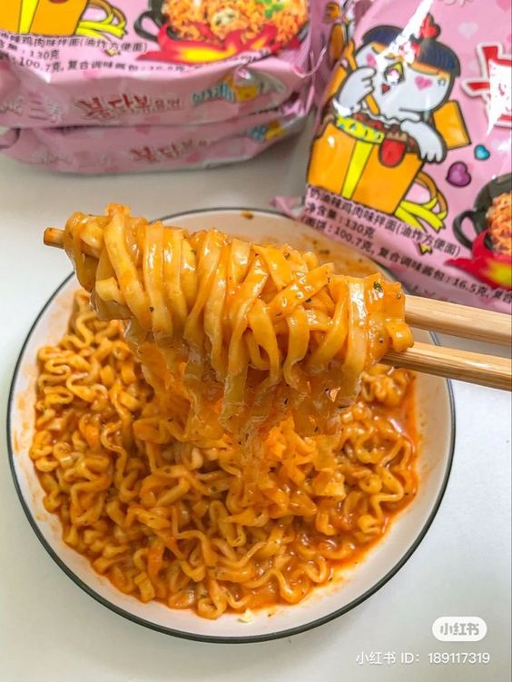

Buldak noodle recipe

Description
This is a buldak noodle recipe I love in 2024. With lots of love and cheese.
It only takes 10 minutes to make, with high volume and nutrition. Arranged by me.
Ingredients
- Buldak noodle
- cheese of any kind
- Seaweed
- Egg yolk
- Garlic powder
- Milk
Steps
- Add the noodle in boiling water and cook for 5minutes.
- pour the excess water out and put it back into the pan.
- Add milk for extra creamyness and steam it for 15seconds.
- Put Cheese, Powder, Spicy sauce, Garlic powder and eggyolk.
- wrap them with sea weed or not and enjoy.